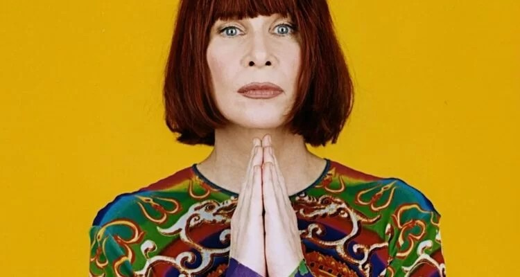

Rita Lee Jones de Carvalho foi uma cantora, compositora, apresentadora de televisão e escritora brasileira. Conhecida como a "Rainha do rock brasileiro".
Construiu uma carreira que começou com o rock, mas que ao longo dos anos flertou com diversos gêneros, como a psicodelia, durante a era do tropicalismo, o pop rock, disco, new wave, o pop, bossa nova e eletrônica, criando um hibridismo pioneiro entre gêneros internacionais e nacionais.
Rita foi considerada uma das musicistas mais influentes do Brasil, sendo referência para aqueles que vieram a usar guitarra a partir de meados dos anos 1970. Ex-integrante do grupo Os Mutantes (1966-1972) e do Tutti Frutti (1973-1978), participou de importantes revoluções no mundo da música e da sociedade. Suas canções, em geral regadas com uma ironia ácida ou com uma reivindicação da independência feminina, tornaram-se onipresentes nas paradas de sucesso, entre as mais populares estão "Ovelha Negra", "Mania de Você", "Lança Perfume", "Agora Só Falta Você", "Baila Comigo", "Banho de Espuma", "Desculpe o Auê", "Erva Venenosa", "Amor e Sexo", "Flagra" e "Doce Vampiro".
Em 1976 iniciou um relacionamento amoroso com o multi-instrumentista e compositor Roberto de Carvalho, que foi o parceiro da maioria das composições de Rita. Nesse período, ela lançou uma série de discos — como Rita Lee (1979), Rita Lee (1980), Saúde (1981), Rita Lee e Roberto de Carvalho (1982) —, que se tornaram grandes sucessos de vendas e consolidou sua popularidade. O casal teve três filhos, entre eles o guitarrista Beto Lee, que acompanhava os pais nos shows. Rita era vegana, defensora dos direitos dos animais, das mulheres e da comunidade LGBT. Com uma carreira de sessenta anos, a artista passou da inovação e do gueto musical dos anos 1960 e 1970, para as baladas românticas de muito sucesso nos anos 1980 e uma revolução musical, apresentando-se com inúmeros artistas, entre eles Elis Regina, João Gilberto e a banda Titãs. Em outubro de 2008, a revista Rolling Stone promoveu a lista dos cem maiores artistas da música brasileira, onde ela ocupa o 15° lugar. Em 2023, Rita, que havia sido diagnosticada com câncer de pulmão dois anos antes, morreu aos 75 anos, em 8 de maio.



.jpg)